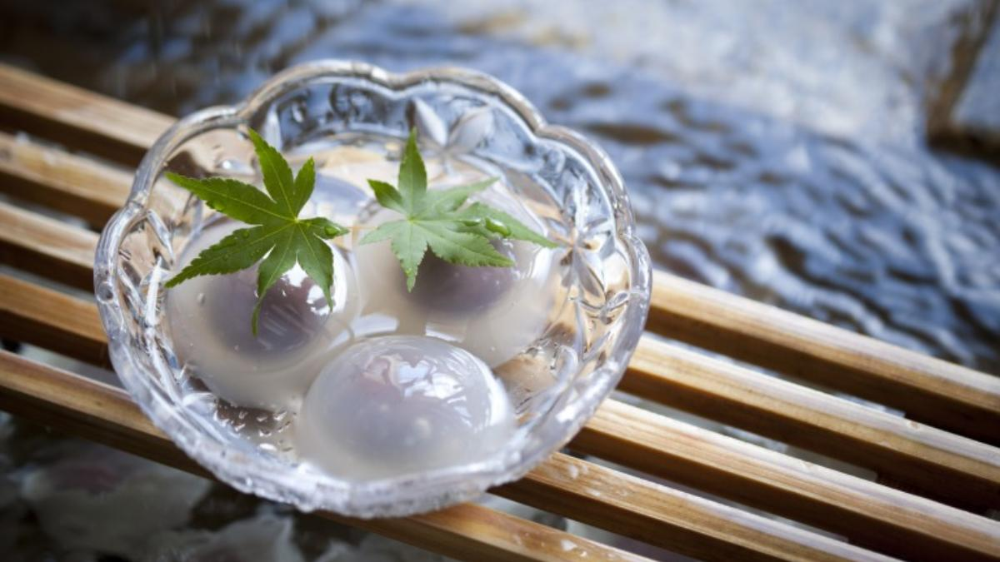

水まんじゅう
清流の涼しさを表現した和菓子。夏場に大人気で市内各所で購入可能。

奥の細道スタンプラリー
芭蕉ゆかりの地を巡るイベント特製ガイド付きの記念品もあります。

地元カフェスイーツ
大垣米を使ったスイーツなどが楽しめるおしゃれカフェも多数。
清流の涼しさを表現した和菓子。夏場に大人気で市内各所で購入可能。
芭蕉ゆかりの地を巡るイベント特製ガイド付きの記念品もあります。
大垣米を使ったスイーツなどが楽しめるおしゃれカフェも多数。